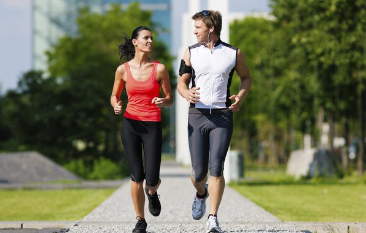
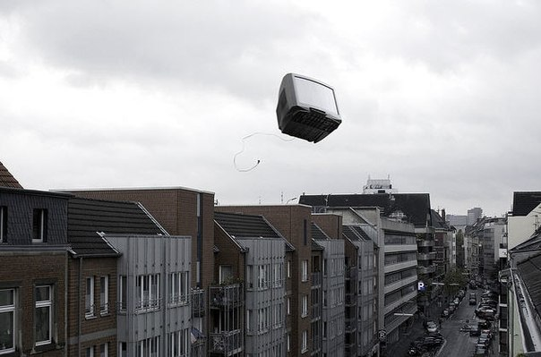
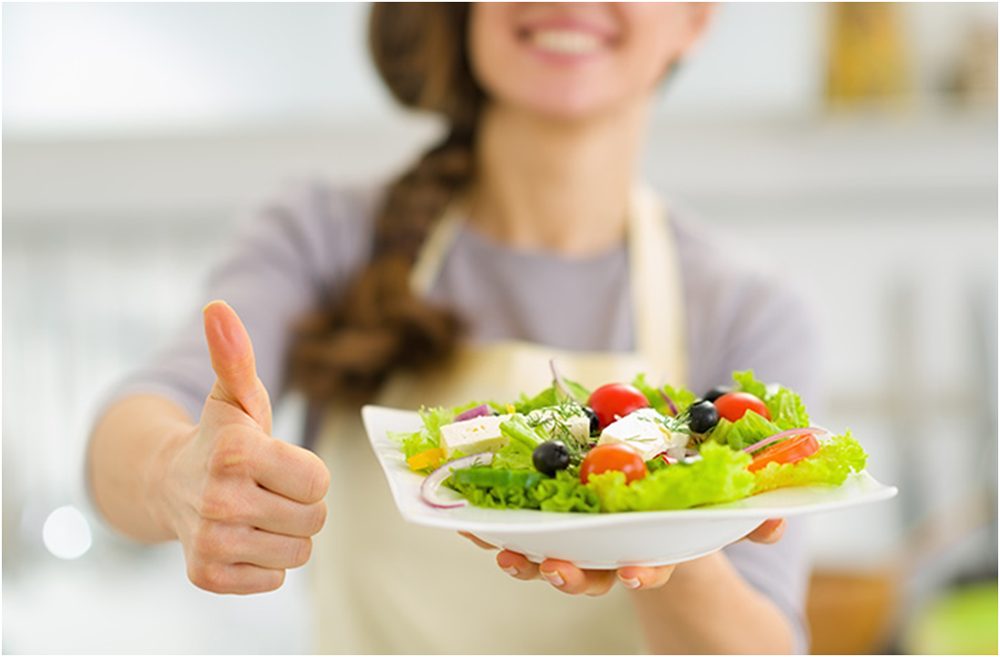
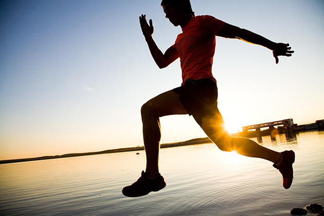

Любите то, что делаете

Если вы через силу будете приходить в спортивный зал, если с отвращением станете смотреть на здоровую пищу, то рано или поздно сорветесь. Вы должны наслаждаться своим образом, а не страдать от него.
Выбросьте телевизор и найдите занятие себе по душе.

Вы правильно питаетесь и даже посещаете дважды в день тренажерку, но при этом все свободное от работы время лежите тюленем перед диваном? Вы не ведете здоровый образ жизни, вы его попросту имитируете.
Телевизор – вон, а образовавшееся свободное время заполнить книгами, спортом, полезным хобби, прогулками на свежем воздухе, активным досугом. Вот это – настоящий ЗОЖ.
Правильно питайтесь

Активность вашего организма в первую очередь зависит от витаминов и минералов, которые получает ваш организм на протяжении дня. Советы по правильному питанию:
- Не запивайте во время еды, а пейте до её приема. Как правило запивая во время еды вы подвергаете свой организм в первую очередь жжению, а также иным расстройства желудка в процессе пищеварения. Чай, кофе и иные напитки нужно пить за 15-30 минут до еды, воду можно и за 10 минут.
- Старайтесь кушать по 5 -7 раз в день небольшими порциями, таким образом вы ни коем образом не перегрузите свой организм и получите максимальное усвоение витаминов.
- Старайтесь пить не менее, чем 1.5 литра воды на протяжении всего дня.
- Последний приём пищи не позже 19:00.
Больше двигайтесь и занимайтесь спортом

Помните о том, что наше тело создано для движения. Малоподвижный образ жизни приводит к лени и подъему артериального давления, влияет на появление плохого аппетита, да и столь привлекательными как Вам бы хотелось, Вы так же не будете! Исходя из этого, советую Вам:
- Больше движений на протяжении дня — наиболее эффектный способ сбросить из себя накопившееся напряжение, поможет вам вернуть ясность ума.
- Утренняя мини зарядка — поможет разогнать сонливость
- Для поддержки тонуса всего тела — 2 раза в неделю посещайте тренажерный зал, а при нехватке времени — тренируйтесь самостоятельно дома.
|